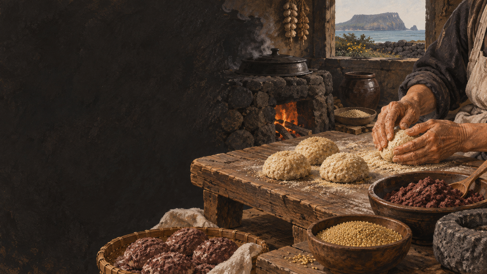

오메기
차조를 가리키는 제주어에서 떡 이름이 왔다는 설명이 널리 전합니다.
 제주에서는 이 재료를
제주에서는 이 재료를
제주 음식의 생활문화를 바탕으로 제작한 기록화 · 생성 이미지
오메기는 차조를 뜻하는 제주어로 풀이됩니다. 논이 드물고 쌀이 귀했던 제주에서 차조 같은 밭곡물은 밥과 떡, 술을 잇는 중요한 재료였습니다.
전통 오메기떡에도 팥고물을 쓴 기록이 있습니다. 오늘의 관광형은 팥알 고물과 단맛, 앙금·견과 같은 속 재료가 커진 상품형이라는 점에서 차이가 납니다. 따라서 ‘옛날에는 팥이 없었다’고 단정하기보다 차조의 비중과 쓰임, 형태의 변화를 함께 봐야 합니다.
가운데가 오목한 떡의 모양과 삶기, 술로 이어지는 쓰임을 순서대로 봅니다.
차조를 불리고 빻아 가루를 마련합니다.
뜨거운 물로 익반죽해 둥글게 빚습니다.
잘 익도록 가운데를 오목하게 만듭니다.
끓는 물에 삶아 건져 물기를 뺍니다.
고물을 묻혀 먹거나 술밑으로 이어 갑니다.
오메기라는 이름, 잡곡 중심의 밭농사, 떡과 술의 관계를 함께 읽습니다.
차조를 가리키는 제주어에서 떡 이름이 왔다는 설명이 널리 전합니다.
화산섬의 밭농사에서 조·보리·메밀은 끼니를 지탱했습니다.
삶은 떡을 으깨 누룩과 섞으면 오메기술의 술밑이 됩니다.
유명한 메뉴보다 왜 이런 재료와 방식이 제주 생활에 필요했는지를 먼저 묻습니다.
팥의 유무만으로 나누지 않고 곡물·단맛·형태·쓰임을 비교합니다.
차조 중심, 집집마다 혼합 곡물 차이
찹쌀 비중과 앙금·견과 등 다양
곡물 향과 담백함
단맛과 부드러운 식감 강조
팥고물을 쓰기도 함
팥알 고물이 대표 이미지로 정착
먹는 떡·술밑
간식·선물·관광 상품
전통은 한 가지 고정 레시피가 아닙니다. 제주 농가의 곡물 사정과 행사, 술 빚기에 따라 모양과 재료가 달랐습니다.
오늘의 오메기떡도 제주 식문화의 한 장면입니다. 다만 ‘원형’이라 부를 때는 차조와 오메기술의 연결을 함께 밝혀야 합니다.
팥고물의 유무만으로 전통과 현대를 가르지 않습니다. 차조·형태·단맛·쓰임을 함께 비교합니다.
가정별 제조법과 ‘오메기’의 어원 설명은 차이가 있을 수 있습니다. 당사자 구술과 지역 자료를 함께 확인합니다.
지역·가정·생산자에 따라 설명과 조리법이 다를 수 있습니다. 현장 인터뷰를 인용할 때는 당사자의 사용 동의를 받습니다.